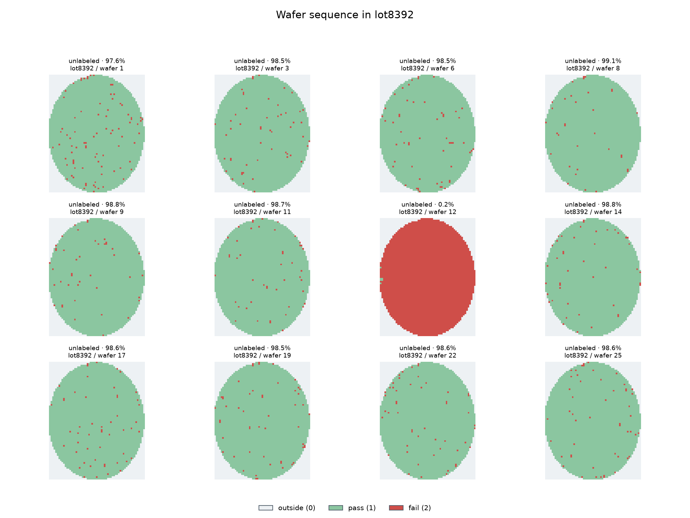
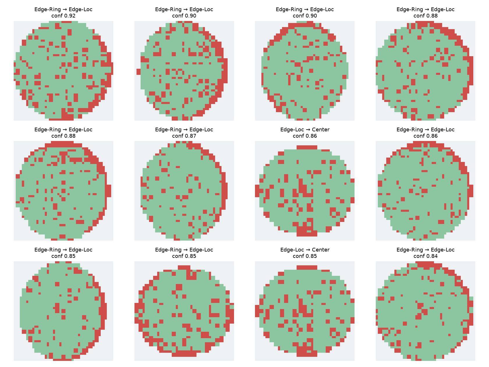
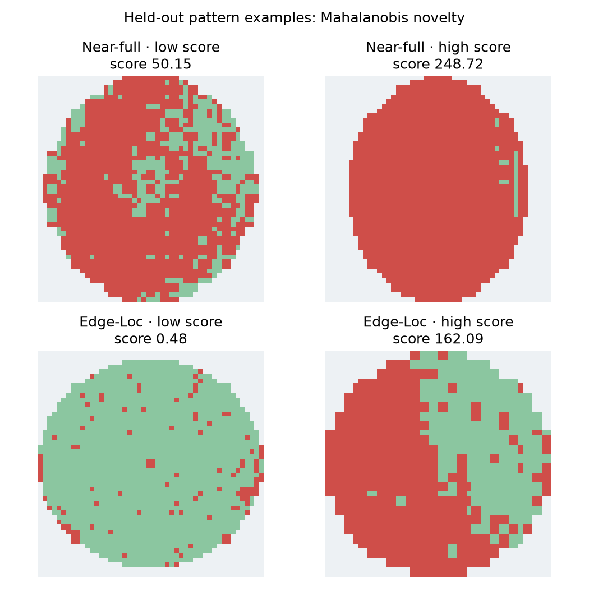

수율·bin
유효 die만 분모로 사용해 wafer·lot 수율을 계산
SEMICONDUCTOR · DATA PORTFOLIO
수율 숫자 하나로 놓치기 쉬운 공간 결함을 정량화했습니다. 알려진 패턴을 분류하고, 처음 보는 패턴을 얼마나 안정적으로 경보할 수 있는지 검증했습니다.
공개 WM-811K 기반 연구 프로젝트 · 실제 공정 원인 및 수율 개선 효과는 검증하지 않았습니다.
01 / APPROACH
각 단계의 계산 결과를 다음 단계의 입력으로 연결하고, lot 기준 분할로 평가 데이터 누출을 줄였습니다.
유효 die만 분모로 사용해 wafer·lot 수율을 계산
원본 map 시각화, 4방향 이웃 Moran's I 계산
반경·사분면·연결 성분 특징과 밀도 군집 비교
lot 분할 테스트와 보류 결함 유형 탐지 평가
02 / EVIDENCE
결함 8종의 동일한 test 3,637장에 대해 수율 단독, 공간 특징, CNN을 비교했습니다.
다만 이 실험에서는 공간 특징을 사용한 기준선이 CNN보다 높았습니다.
결함 유형 8종, none·미라벨 제외 · 같은 lot 분할 · 테스트 데이터로 모델 설정을 고르지 않음
Mahalanobis 거리 기반 · 8종을 하나씩 학습에서 제외
알려진 유형 오경보율 4.3%. AUROC만으로 운영 가능성을 판단할 수 없습니다.
HDBSCAN 표본에서 라벨 결함 360장 중 341장이 noise였습니다.
Edge-Ring OOD 탐지율은 0.5%, Scratch는 0%였습니다.
03 / CASE NOTES
Wafer map은 원인 진단서가 아닙니다. 관찰과 추가 확인 항목을 분리했습니다.

lot8392 wafer 12의 수율은 0.17%. 그림에 선정된 다른 11장의 중앙값은 98.59%입니다.
다음 확인 재측정 여부, wafer 순서, 장비·챔버·공정 시간 이력

CNN이 일부 Edge-Ring → Edge-Loc 사례를 높은 확신으로 잘못 분류했습니다.
다음 확인 둘레 연속성, 각도 범위, 라벨 판정 기준 재검토

Near-full은 소수 test 17장을 모두 탐지했지만, Edge-Loc의 보류 유형 탐지율은 8.5%였습니다.
다음 확인 기존 클래스와의 특징 중첩, 정상 wafer 오경보
04 / ENGINEERING JUDGMENT
이 공개 데이터에는 장비·레시피·공정 계측·시간 정보가 없습니다. 따라서 어떤 장비가 불량을 만들었는지, AI가 수율을 개선했는지 주장하지 않습니다.
REPRODUCIBLE BY DESIGN
단계별 보고서와 재현 명령은 GitHub 저장소에 있습니다. 원본 대용량 데이터와 모델 캐시는 저장소에 포함하지 않았습니다.